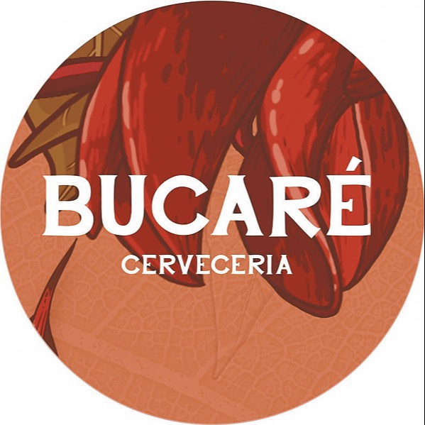

PUNTO DE PARTIDA
Una marca, dos versiones publicadas.
Los dos archivos se conservan sin redibujar. Su coexistencia requiere confirmación de la cervecería.

12 propuestas de diseño, no identidades aprobadas. Fotografías públicas de Florida como material de estudio; precios, horarios y condiciones pendientes se detallan en el informe.
Sin propuestas en esta selección.
EXPLORACIONES TIPOGRÁFICAS
Seis tratamientos, ningún logo aprobado nuevo.
Muestras de composición con tipografías de apoyo. No son calcos ni sustituyen los archivos originales.
BU
CA
RÉ
CA
RÉ
Archivo Black · propuesta
BUCARÉ
Space Grotesk · propuesta
Bucaré
Instrument Serif · propuesta
BUCARÉCERVECERÍA
Fraunces · propuesta
BUCARÉBIRRA · COCINA
Barlow Condensed · propuesta
BucaféPOR BUCARÉ
Fraunces · propuesta